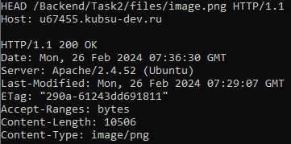

1) получить главную страницу методом GET в протоколе HTTP 1.0;
2) получить внутреннюю страницу методом GET в протоколе HTTP 1.1;
3) определить размер файла file.tar.gz, не скачивая его;

4) определить медиатип ресурса /image.png;
5) отправить комментарий на сервер по адресу /index.php;
6) получить первые 100 байт файла /file.tar.gz;
7) определить кодировку ресурса /index.php.